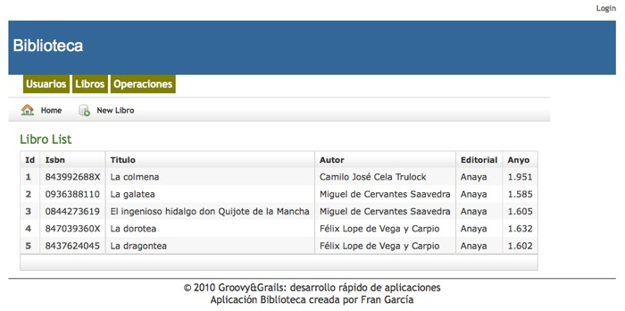

Construir la interfaz de usuario (I) - Ejercicios
Enlaces rápidos
Modificar la apariencia por defecto de la aplicación Biblioteca para que siempre tenga visible los enlaces a las diferentes partes del sistema, es decir, Usuario, Libros y Operaciones.
Para ello habrá que modificar el archivo grails-app/views/layout/main.gsp, así como la hoja de estilos web-app/css/main.css para que quede algo similar al siguiente esquema:

Al hacer clic sobre esos enlaces se mostrará el listado correspondiente. Utiliza cualquiera de las etiquetas de enlaces presentadas durante la sesión.
Modificación de la cabecera
Realiza las modificaciones necesarias para que además del nombre del usuario identificado, se muestre también el tipo de usuario que es. Incluye también un enlace para que el usuario autenticado pueda acceder directamente a la edición de sus datos sin tener que acudir al listado de usuarios.
El usuario autenticado en la aplicación deberá ver su nombre completo seguido del tipo de usuario que es junto con un enlace para editar su datos personales.
Aviso de abandono de la aplicación
Algo típico en cualquier aplicación que necesite de la autenticación por parte de sus usuarios es que cuando éstos quieren abandonar la aplicación, ésta les muestre una pregunta para confirmar que realmente quieren abandonar la aplicación y que no ha sido un error.
Modificar el archivo correspondiente para que cuando el usuario haga clic sobre el enlace para abandonar la aplicación, éste deba confirmar que realmente quiere hacerlo. Lo podemos hacer mostrando directamente con Javascript la pregunta con la función confirm() o bien, con algo más de estilo, mostrando un recuadro en nuestra aplicación con la pregunta en cuestión.